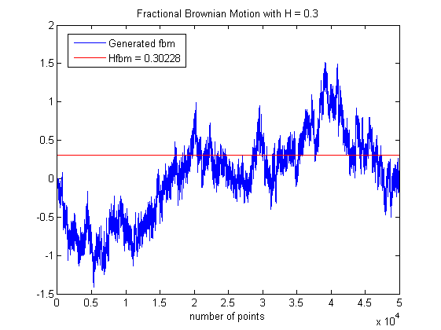

| FRACLAB Functions |
|
Computes the Hurst parameter based on a increment ratio statistic method for a 1D signal
H = estimirs(X)
H = estimirs(X,EPS)
H = estimirs(X) Estimates the Hurst parameter of the 1D signal X.
H = estimirs(X,EPS) Estimates the Hurst parameter using a specific tolerence, EPS. If the tolerence is not specified EPS = 1e-5.
N = 50000; H = 0.3;
fbm = fbmwoodchan(N,H);
Hfbm = estimirs(fbm); t = linspace(Hfbm,Hfbm,N);
figure; plot(fbm); hold on; plot(t,'r');
legend('Generated fbm', ['Hfbm = ' num2str(Hfbm)]);
title('Fractional Brownian Motion with H = 0.3');
xlabel('number of points');xlim([0 N])

[1] Bardet, J-M. & Surgailis, D. Measuring the roughness of random paths by increment ratios. hal-00238556, version 1 - 4 Feb 2008
| |
flvariaIR | estimGQV1DH | |